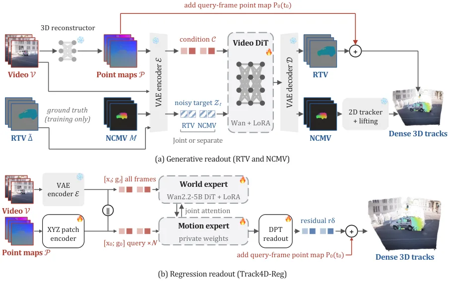
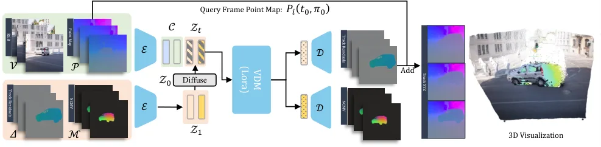
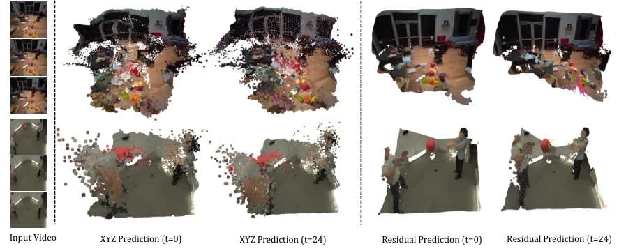
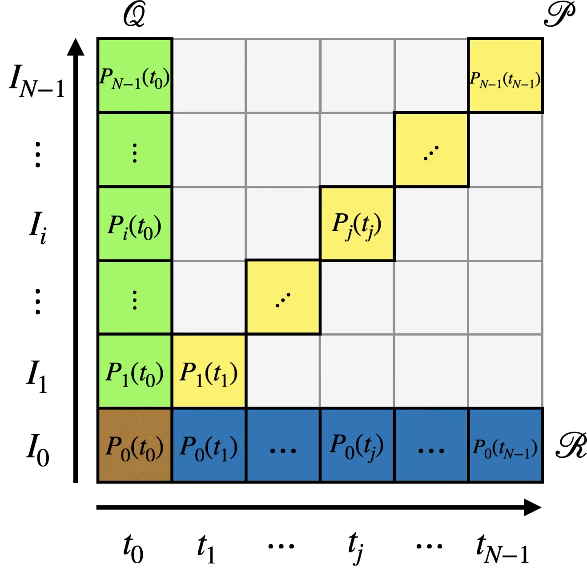
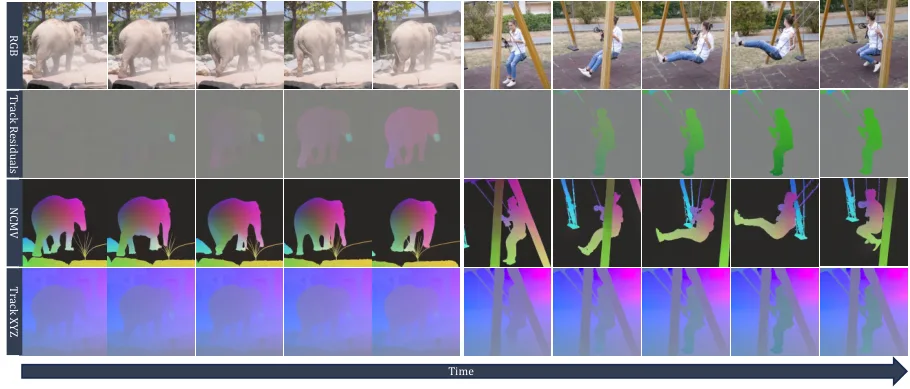

Track4D：把稠密 3D 跟踪表示成视频，交给视频扩散模型
Track4D: Representing Dense 3D Tracking for Video Diffusion Models
这篇的价值是把“用生成模型做 3D 跟踪”从一句口号变成一次可复现的表示对比：RTV 精度更高，NCMV 更自然但需要 2D 跟踪器补救。作者还给了不经过输出 VAE 的回归读出（Track4D-Reg），可用稀疏监督，且在 Dynamic Replica 动态点上做到最好。最有说服力的诊断是“几何 vs 运动”的替换实验：把输入点图换成真值后 EPE 从 0.413 掉到 0.053，说明瓶颈在脚手架几何而不是预测的运动。
APD on held-out Kubric
ADT all-point APD
PO EPE with GT geometry
作者、单位与技术谱系 · Research context
作者与单位
研究脉络
- V-DPM / Dynamic Point Maps方法基座关系：问题表述（对角/行/列三种点图）与残差表示直接继承 V-DPM 与 Dynamic Point Maps，Figure 3 明确写 “adapted from V-DPM”。[论文 §3.1、§3.2、Figure 3]
- Wan生成先验关系：冻结 Wan 视频 DiT 与 3D VAE，只加 LoRA，所有生成能力来自这一预训练骨干。[论文 §3.2、§4.1]
- TrackCraft3R并发对照关系：同样用 LoRA 适配视频 DiT 预测查询帧锚定的 3D 残差，但保留输出 VAE；本篇的回归读出明确“following TrackCraft3R”，差别在去掉 VAE 以便稀疏监督。[论文 §3.4、§4.5]
合作网络
- Oxford VGG ↔ NTUUniversity of Oxford (VGG) → Nanyang Technological University关系：共同署名[论文首页作者单位]
- Track4D ↔ V-DPM / TrackCraft3RTrack4D → V-DPM [22]、TrackCraft3R [66]关系：技术依赖[论文 §3.1、§3.4、§4.5]
单位与资助来自论文首页与致谢；技术依赖来自正文的 adapted from / following 表述，未推断任何师生关系。
方法本质拆解 · What actually changed
是不是微调？
是 LoRA 微调：冻结 Wan 的 VAE 与 patch embedder，只在 DiT 的注意力/MLP 线性层上加 rank-64 LoRA，用单卡规模的学术资源即可训 14B 版本；联合模型在 RTV-only 适配器基础上续训 5,000 次迭代（32 张 GH200 约一天）。回归读出换用 Wan2.2-TI2V-5B 世界专家 + 同深度私有 motion expert，DPT 头一次前向出结果，同样只训适配部分与头。
有没有额外约束？
输入侧有强约束：必须提供现成重建器的对角点图 P 作为几何脚手架，模型只学运动；RTV 的偏移要做符号保持 log 变换并乘训练集统计出的 K，保证落在 [−1,1] 且零位移映射为零；NCMV 的归一化只对前景物体的坐标做 min-max；生成时还在输入视频 latent 上加 0–400 步随机噪声以缩小合成到真实的差距。输出侧没有可见性预测，生成式读出对所有点都给轨迹。
推理/后端到底做了什么？
推理是条件视频生成：把视频与点图编码后在宽度方向拼接作为条件，从高斯噪声迭代去噪 50 步（可降到 5–10 步，EPE 相近），解码出 RTV/NCMV 后再做逆归一化得到 3D 轨迹。NCMV 还需要额外后处理：跑 CoTracker3 得 2D 对应，再用 VGGT 提升到 3D。整个流程没有逐场景优化，也没有全局 BA；回归读出则完全跳过去噪与 VAE，一次前向出残差。
方法本质是什么？
本质是把“跟踪”改写成“生成一段表示 3D 位移的视频”，用 VDM 的时空先验替代稀缺的跟踪标注，再用残差与 log 归一化把非自然信号拉回可生成的范围。它没有做的是联合估计几何与运动——几何完全由外部脚手架给定，这也直接解释了为什么替换真值几何能把 EPE 降一个数量级。
输入单目视频 + 外部点图脚手架，改变的是轨迹的表示形式（残差 3D 偏移视频），动作是 LoRA 适配冻结 Wan 并迭代去噪生成，直接效果是零样本 ADT 上 APD 0.892 且稠密 Kubric 上大幅超过 St4RTrack。

结论与问题Conclusion & Motivation
核心结论
Track4D 的结论是：只要选对表示，视频扩散模型的先验可以迁移到稠密 3D 跟踪上，而且不需要海量跟踪标注。RTV（3D 偏移的残差视频）是推荐部署路径：在唯一与训练信号同密度的 Kubric 留出集上，0.336 APD / 1.079 EPE，明显优于 St4RTrack（0.047/5.333）与 TraceAnything（0.288/1.550）；在 ADT 上 All APD 0.892、Dyn 0.954 为十种方法最高。NCMV 精度较低（PO Dyn 0.480 APD），但它证明 VDM 能直接把稠密对应关系当作视频输出，而不只是从冻结特征里读稀疏轨迹。
动机与问题
稠密 4D 重建需要每个可见表面点的 3D 位置与运动，但带稠密 3D 跟踪标注的视频极少，端到端稠密跟踪器因此受限于数据规模；稀疏跟踪器又难以扩到稠密输出。与此同时，视频扩散模型在数百万无标注视频上学到了强时空先验，已被证明可用于深度、动态重建与短时对应。作者因此问：能不能把 3D 轨迹本身写成“视频”，让 VDM 去生成它。
方法Method
方法总览
给定单目视频与现成重建器给出的对角点图 P，模型采样行 R 与列 Q 的条件分布 P(R,Q|V,P)。R 是“从查询帧出发、把每个像素推到各时刻 3D 位置”的轨迹集合，Q 是“把每帧像素都拉回参考时刻”的时间不变点图。R 被写成残差：P_i(t_j)=P_i(t_0)+Δ_i^j，并对 Δ 做符号保持的 log 变换后归一化到 [−1,1]，得到 RTV；Q 线性归一化到 [−1,1]，得到 NCMV。两者都是 3 通道视频，宽度方向拼接后作为生成目标，条件是把视频与点图 latent 拼接；模型用 LoRA（rank 64）适配冻结的 Wan DiT，VAE 与 patch embedder 冻结，训练用 Rectified Flow 回归速度场。
关键技术细节
归一化是精度关键：直接用全局 min-max 会把动态区域压进很窄的数值范围，log 变换把小位移放大、且零位移严格映射到零，K 由训练集统计量确定。NCMV 的规范坐标 φ(p)=2·(p−p_min)/(p_max−p_min)−1 只对前景物体做，使同一物理点在整段视频里保持同一“颜色”。解码 NCMV 时先跑 CoTracker3 得 2D 对应，再用 VGGT 提升到 3D；否则按颜色硬匹配会因为颜色可分性有限而失败。回归读出则完全绕过输出 VAE：点图经 patch encoder 进入，一个私有 motion expert 与视频 DiT 每层联合注意力，DPT 头一次前向输出归一化残差与可见性 logit，因此可用稀疏标注训练。

实验Experiments
实验设置
生成式模型只用合成数据训练：把 Kubric 重渲染成 5,600 段、每段 49 帧的片段并按 Delta3D 计算稠密 3D 跟踪，再加 TartanAir（把跟踪真值设成静态查询帧点图）。评测在 PointOdyssey、Aria Digital Twin、Panoptic Studio、Dynamic Replica 与 Kubric 留出集上，前四个各取 50 段、前 49 帧；指标是 APD3D（δ∈{0.1,0.3,0.5,1.0} m）与 Sim(3) 对齐后的 EPE。对照分四组：2D 跟踪器 + 深度提升（SpaTrackerV2、CoTracker3*）、稠密 4D 重建（St4RTrack、TraceAnything）、更新的 3D 基础模型方法（Any4D、V-DPM）、并发工作 TrackCraft3R，另有 Track4D-Reg 与它们的对比。
实验数字与比较
Kubric 留出（唯一稠密基准）：Track4D-RTV 0.336 APD / 1.079 EPE，St4RTrack 0.047/5.333，TraceAnything 0.288/1.550；动态点上 V-DPM 最好。零样本稀疏基准：ADT All 0.892/Dyn 0.954 为第一；PStudio Dyn 0.810、DR All 0.775/Dyn 0.785，与 St4RTrack（0.800/0.794）相当或更好；PO Dyn 0.690 APD / 0.289 EPE，落后 V-DPM（0.817/0.169）。回归读出 Track4D-Reg：PO All 0.805/0.208、DR Dyn 0.814/0.167（后者为第一），在 12 个基准×几何组合中 9 个优于 TrackCraft3R。
消融/失败边界
关键消融（256×256、ADT/PStudio/DR）：去掉残差预测、直接回归绝对 3D 坐标，DR All APD 从 0.525 掉到 0.296；去掉 log 归一化换 min-max，ADT Dyn 从 0.937 掉到 0.920；去掉点图条件，PStudio 从 0.728 掉到 0.640、DR Dyn 从 0.701 掉到 0.591。脚手架质量决定上限：换 DAv3 后 ADT All 提升到 0.9182，但 DR 动态点 APD 掉到 0.6415，而 STream3R 为 0.7183，说明没有一种脚手架处处最好。最硬的失败边界来自“几何 vs 运动”替换：把输入点图换成真值后 PO EPE 从 0.413 降到 0.053、DR 从 0.226 降到 0.027，而把运动换成真值最多只改善 0.01——误差主要在脚手架几何，不在预测的运动。
局限与迁移Limitations & Transfer
局限与待核验
作者列出三条：RTV 需要每像素目标，因此训练只能用一个稠密动态 3D 跟踪数据集；NCMV 的轨迹精度较低；Track4D-Reg 受输入几何限制。我们的待核验项：正文的推理成本为 50/10/5 步分别 14/9.6/8.6 s 每段（单张 A6000），但这是在 5B 采样消融的设置下，14B 主干的实际延迟未在正文给出；训练用 32 张 GH200 约一天（rank-64 LoRA、5,000 次迭代续训），复现门槛不低；“随机潜噪声 0–400 步”这一缓解合成到真实差距的技巧只在附录，正文未量化其对各基准的贡献。
与你研究路线的关系
可迁移的第一点是表示设计：把 3D 轨迹写成“相对查询帧的残差 + log 归一化”，让静态区域严格为零、动态位移被放大，这个技巧可以直接用在我们的场景流/动态点预测的监督里，避免模型把静态几何背下来。第二点是读出方式的选择：生成式读出受 VAE 模糊与稠密标注限制，回归读出可吃稀疏监督且更快，这提示我们在工程上应优先做“冻结生成先验 + 轻量回归头”，而不是端到端生成。下一步实验：固定同一个点图脚手架（例如 STream3R），比较我们现有跟踪器与 Track4D-RTV 在相同稀疏标注下的 APD/EPE，并做一次“真值几何替换”诊断，确认我们的误差是几何还是运动主导。







